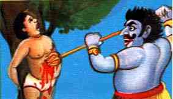
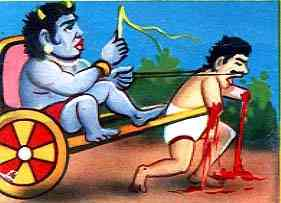
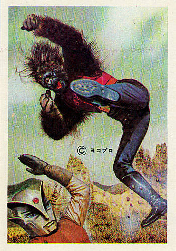

Apr 06 2006

per un’ora da MUORE
PORCODDIO, HO DETTO PORCODDIO.
E’ incredibile quante bestemmie si possono tirare in circa 30 minuti, porcoddio.
Se asbesto si lamenta della gente in mezzo ai coioni pe strada, FORSE non sa di COSA E’ ROMA. Immancabilmente ti si piazza davanti la TROIA MORTA di turno, o il VECCHIO BASTARDO BAVOSO, che non vogliono passare con il verde, ma farsi una passeggiata al centro esatto della strada, oppure FRENANO ALL’IMPROVVISO, perche’ e’ uno sport FIGO, e io stavo per fare un CHIOPPO DI CRISTO grazie al mio motorino che frena CON CALMA.
E POI GLI ZINGARI MALEDETTI E BASTARDI, IN MEZZO ALLA STRADA DEL PORCODDIO: ne stavo mettendo sotto una, maledetto GESU’.
Ho provato ETTARI DI PANICO.

E poi un’altra STRONZA che mi si e’ piazzata davanti e mi ha fatto fottere ANCHE L’ULTIMO SEMAFORO PRIMA DI CASA.

E POI, DIO PUTTANA DI SE STESSO, MADONNA PENTAGRAMMA DI CAZZI, GESU’ IONE COIONE, ARRIVO A CASA, VADO AL COMPUTER, ACCANNO LO SCREENSAVER CON SHIFT e…
LO SCHERMO SI ILLUMINA, E SI SPEGNE:
KERNEL PANIC, BENVENUTO NELL’AIDS.
CERTAMENTE non ho le prove, perche’ questa CACATA non logga una CEPPA DI CAZZO DURO, ma io ipotizzo FERMAMENTE che sia colpa dei MERDOSI driver BLOBBI BINARI della ATI, ANCORA TRAVI INANO. Driver binario = MERDA NEL RETTO, come dice THEO IL RATTO.

REALTA’: VAFFANCULO.